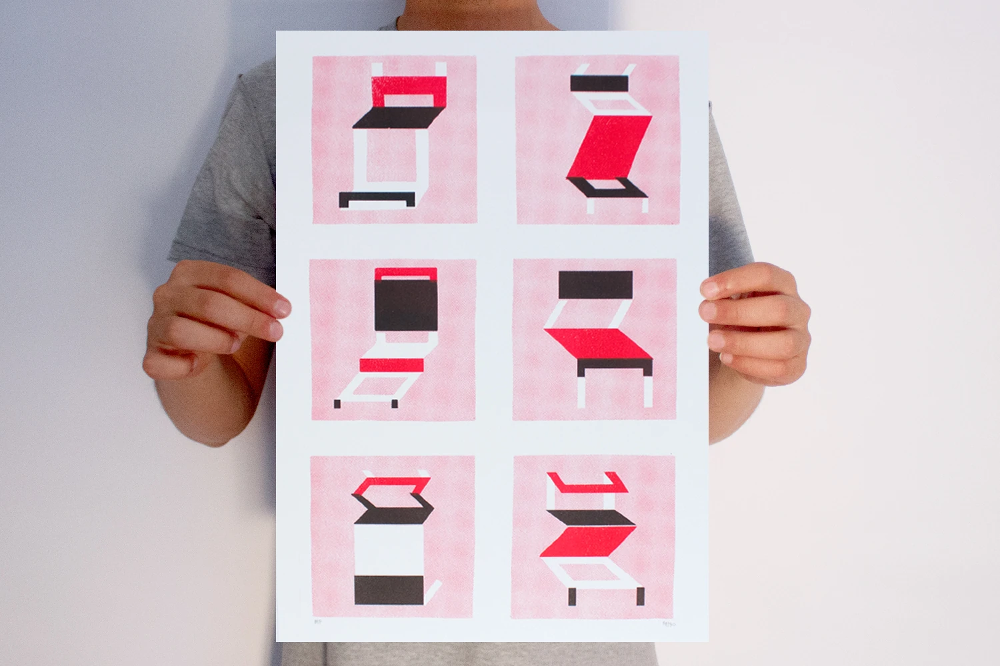
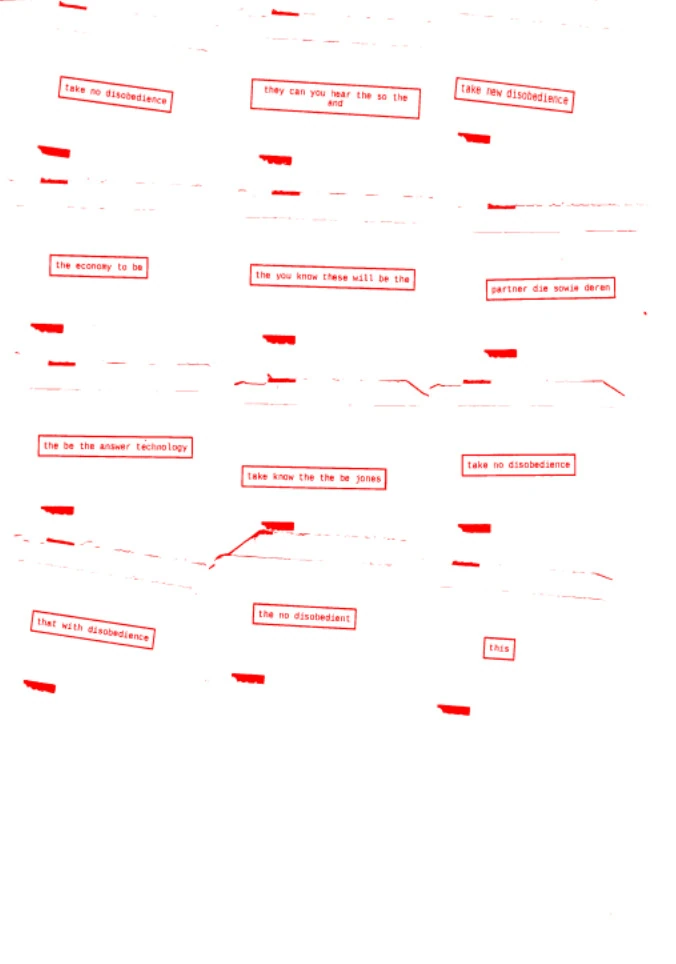
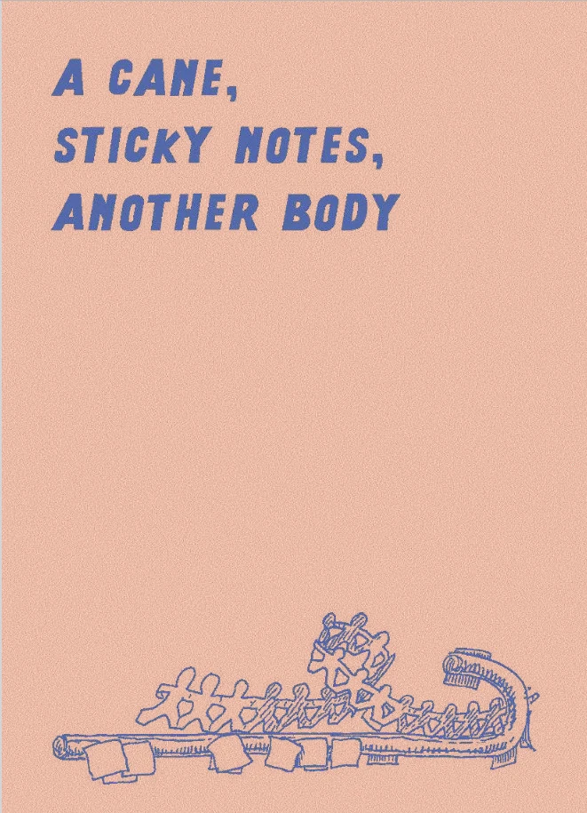
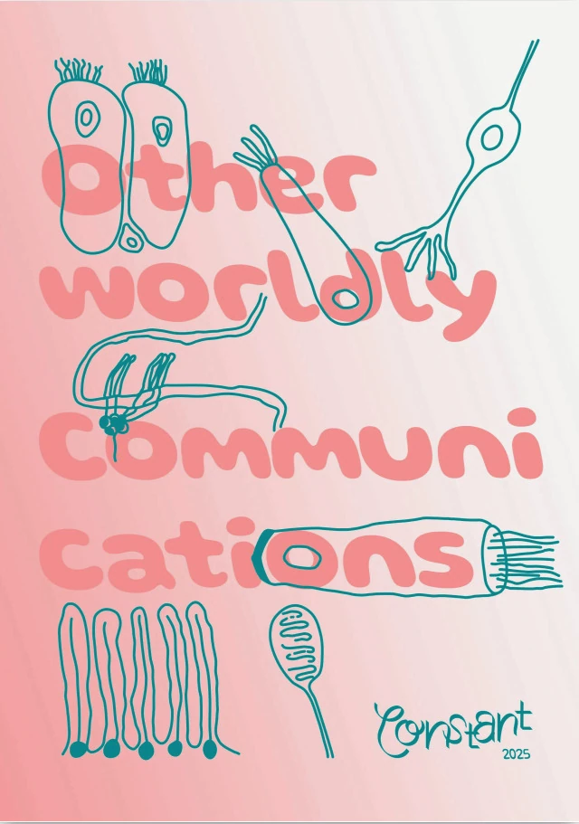

見どころ
一枚の紙を六つに区切り、家具の座面や脚を赤と黒の面に置き換えた。背景の淡い赤と座面の濃い赤を比べると、2色でも濃淡によって奥行きをつくれるとわかる。
作品・制作の例7件を紹介しています。実作品画像4点、参照・関連画像0点。画像の収集は継続中です。
技法・制作方法
Risograph
学校のお知らせのように、同じ紙をたくさん刷る機械が、作品づくりにも使われます。リソグラフは理想科学工業の印刷機です。小さな穴のある版からインクを通して刷ります。
実作品を見る

画像を表示できませんでした。下の出典ページで確認できます。
マリオ・フェリペ（図案・写真）、A3press（印刷） / 2014年
一枚の紙を六つに区切り、家具の座面や脚を赤と黒の面に置き換えた。背景の淡い赤と座面の濃い赤を比べると、2色でも濃淡によって奥行きをつくれるとわかる。
Mario Felipe／印刷 A3press／写真提供 Mario Felipe（Wikimedia Commons経由）
出典で作品・資料を見る ↗実作品を見る

画像を表示できませんでした。下の出典ページで確認できます。
Constant、マネッタ・ベレンツ、アリックス・テュルク / 2023年度号
小さな赤い枠の中に短い言葉を入れ、三列に配した表紙。制作チームは共同編集用の仕組みを組み替え、同じデータからウェブ用の2色刷り見本と印刷所に渡す色別の版を作った。
Constant, Manetta Berends, Alix Turcq／印刷 Chez Rosi（ブリュッセル）／表紙図版 Constant
出典で作品・資料を見る ↗CC4r 1.0（Collective Conditions for Re-use）
出典先の原画像を開く ↗作品の所蔵・権利情報 ↗画像の利用条件 ↗図版全体を保ち、表示用のWebP画像を作成。
実作品を見る

画像を表示できませんでした。下の出典ページで確認できます。
Constant、サラ・ガルサン / 2025年刊（2024年度号）
上部の文字と下端に横たわる杖の線画を、大きな余白が隔てる。アクセシビリティをテーマにした活動を編集部が三日間でまとめ、サラ・ガルサンが紙面と作業工程を整えた。
Constant, Sarah Garcin／印刷 Chez Rosi（ブリュッセル）／表紙図版 Constant
出典で作品・資料を見る ↗CC4r 1.0（Collective Conditions for Re-use）
出典先の原画像を開く ↗作品の所蔵・権利情報 ↗画像の利用条件 ↗図版全体を保ち、表示用のWebP画像を作成。
実作品を見る

画像を表示できませんでした。下の出典ページで確認できます。
Constant、サラ・マニャン / 2025年度号、2026年刊行記念会
桃色の太い文字に、緑色の生きものめいた線画が入り込む。人間以外の存在との共生を扱った号で、文字の一部を囲んだり、文字列をまたいだりする絵の動きが主題と結びついている。
Constant, Sarah Magnan／印刷 Chez Rosi（ブリュッセル）／表紙図版 Constant
出典で作品・資料を見る ↗CC4r 1.0（Collective Conditions for Re-use）
出典先の原画像を開く ↗作品の所蔵・権利情報 ↗画像の利用条件 ↗図版全体を保ち、表示用のWebP画像を作成。
表現が確かめられる印刷作品
蛍光（けいこう）オレンジと青の二色で、ゲーム機の斜めの盤面やアール・デコの模様をもとにした形を刷っています。二色の版で一枚をつくる例です。
作品・資料の出典を見る ↗原題：Deco A3 Risograph Wall Art
ガブリエラ・マルチェッラ／印刷：リゾット・スタジオ / 制作年未確認 / リソグラフによる紙の印刷作品
日本語の見出しは読みやすさのための呼び名・説明名です。原題は記録欄に示しています。
画像の転載条件は未確認。出典の公開は転載許諾ではありません。
表現が確かめられる印刷作品
マティスの切り紙を手がかりにした葉の形を、水色の一色で灰色の紙に刷っています。インクの色だけでなく、紙の色も画面づくりに使う例です。
作品・資料の出典を見る ↗原題：FOLIAGE — Pop Collection: A3 Print
ガブリエラ・マルチェッラ／印刷：リゾット・スタジオ / 制作年未確認 / リソグラフによる紙の印刷作品
日本語の見出しは読みやすさのための呼び名・説明名です。原題は記録欄に示しています。
画像の転載条件は未確認。出典の公開は転載許諾ではありません。
表現が確かめられる印刷作品
黄・赤・青の三色の線を組み合わせ、色が少しずつ変わるように見せています。ソウルのコーナーズが印刷した、50部限定の作品です。
作品・資料の出典を見る ↗原題：Linescape A2 Risograph Wall Art
ガブリエラ・マルチェッラ／印刷：コーナーズ（ソウル） / 制作年未確認 / リソグラフによる紙の印刷作品
日本語の見出しは読みやすさのための呼び名・説明名です。原題は記録欄に示しています。
画像の転載条件は未確認。出典の公開は転載許諾ではありません。
2色のリソグラフ、A3判、限定30部
一枚の紙を六つに区切り、家具の座面や脚を赤と黒の面に置き換えた。背景の淡い赤と座面の濃い赤を比べると、2色でも濃淡によって奥行きをつくれるとわかる。
作品・資料の出典を見る ↗原題：.
マリオ・フェリペ（図案・写真）、A3press（印刷） / 2014年 / 2色のリソグラフ、A3判、限定30部
リソグラフ印刷のジン。画像は刊行元による表紙図版
小さな赤い枠の中に短い言葉を入れ、三列に配した表紙。制作チームは共同編集用の仕組みを組み替え、同じデータからウェブ用の2色刷り見本と印刷所に渡す色別の版を作った。
作品・資料の出典を見る ↗原題：Techno-disobedience
Constant、マネッタ・ベレンツ、アリックス・テュルク / 2023年度号 / リソグラフ印刷のジン。画像は刊行元による表紙図版
リソグラフ印刷のジン。画像は刊行元による表紙図版
上部の文字と下端に横たわる杖の線画を、大きな余白が隔てる。アクセシビリティをテーマにした活動を編集部が三日間でまとめ、サラ・ガルサンが紙面と作業工程を整えた。
作品・資料の出典を見る ↗原題：A Cane, Sticky-notes, Another Body
Constant、サラ・ガルサン / 2025年刊（2024年度号） / リソグラフ印刷のジン。画像は刊行元による表紙図版
リソグラフ印刷のジン。画像は刊行元による表紙図版
桃色の太い文字に、緑色の生きものめいた線画が入り込む。人間以外の存在との共生を扱った号で、文字の一部を囲んだり、文字列をまたいだりする絵の動きが主題と結びついている。
作品・資料の出典を見る ↗原題：Otherworldly Communications
Constant、サラ・マニャン / 2025年度号、2026年刊行記念会 / リソグラフ印刷のジン。画像は刊行元による表紙図版
1958年のリソーグラフは前身の機器です。1980年にはリソグラフの製版機（せいはんき。印刷用の版をつくる機械）と印刷機が登場しました。機械の発売年と、個々の印刷作品がつくられた年は分けて考えましょう。
重ねたインクの色を見ると、一色ずつ刷る仕組みを考えられます。
文字も画像も刷れます。特定の書体だけを使う方法ではありません。
マスターと呼ぶ薄い版を、インクの入った胴に巻きつけます。
色が少しずれることもありますが、ずれは必須の特徴ではありません。
シルクスクリーンと同じく穴を通す印刷ですが、版を機械の胴に巻く仕組みが異なります。コピー機のように見えても、同じ方式ではありません。
リゾット・スタジオなどの工房では、リソグラフを作品や小さな出版物の制作に使っています。印刷作品では、一色・二色・三色の刷り方と、紙の色の生かし方を比べられます。機械の歴史は、作品とは別の参考情報として整理しています。
印刷機の例（印刷作品ではない）
版をつくる機械と刷る機械の組み合わせです。
作品・資料の出典を見る ↗原題：RISOGRAPH AP7200 / FX7200
理想科学工業 / 1980 / 製版機・印刷機
日本語の見出しは読みやすさのための呼び名・説明名です。正式な原題は title_original に記録しています。
画像の転載条件は未確認。出典の公開は転載許諾ではありません。
印刷機の例（印刷作品ではない）
製版と印刷を一台にまとめた製品です。
作品・資料の出典を見る ↗原題：RISOGRAPH 007
理想科学工業 / 1984 / 印刷機
日本語の見出しは読みやすさのための呼び名・説明名です。正式な原題は title_original に記録しています。
画像の転載条件は未確認。出典の公開は転載許諾ではありません。
印刷機の例（印刷作品ではない）
メーカー年表では、日本で2013年に発売された機種です。1980年、1984年の機器と分けて、製品展開を確かめる例です。
作品・資料の出典を見る ↗原題：RISO A2
理想科学工業 / 2013 / 印刷機
日本語の見出しは読みやすさのための呼び名・説明名です。正式な原題は title_original に記録しています。
画像の転載条件は未確認。出典の公開は転載許諾ではありません。
リソグラフで刷ったポスターや冊子から、色を重ねた部分や、紙とインクの組み合わせを見比べます。
作品・制作の例7件を紹介しています。実作品画像4点、参照・関連画像0点。画像の収集は継続中です。